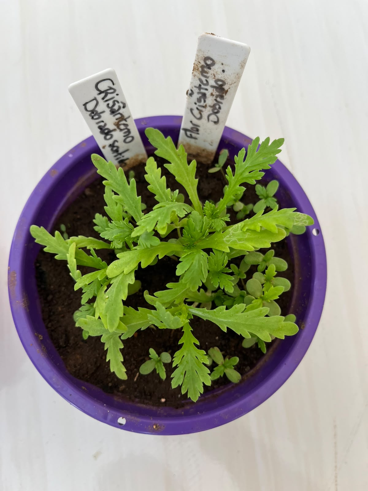

🌺 Identificação da Planta
Nome científico: Chrysanthemum × morifolium
Nome popular: Crisântemo Dobrado
Família botânica: Asteraceae
Origem: China, com grande tradição de cultivo também no Japão.
Ciclo de vida: Perene
Altura: 30 a 90 cm
Luminosidade: Sol pleno ou meia-sombra
Cor das flores: Branca, amarela, rosa, lilás, vermelha, laranja, vinho e outras variedades.
Vaso na Horta Escolar Viva: 🟣 Roxo
🌿 Características
O Crisântemo Dobrado é uma planta ornamental conhecida por suas flores exuberantes, formadas por numerosas pétalas que criam um aspecto cheio e elegante. Sua grande variedade de cores e formas faz dela uma das flores mais apreciadas em jardins e paisagismo.
Além da beleza ornamental, suas flores fornecem néctar e pólen para diversos insetos polinizadores, contribuindo para a biodiversidade e enriquecendo os espaços verdes da Horta Escolar Viva.
☀️ Como Cultivar
O Crisântemo Dobrado gosta de ambientes iluminados e pode ser cultivado em vasos, jardins e espaços escolares.
- ☀️ Prefere sol pleno ou meia-sombra bem iluminada.
- 💧 Necessita de regas regulares sem encharcar o solo.
- 🌱 Desenvolve-se melhor em solo fértil e bem drenado.
- 🌿 Pode ser cultivado em vasos e canteiros.
A retirada das flores secas estimula novas florações e mantém a planta saudável durante mais tempo.
🐝 Importância para a Biodiversidade
As flores do Crisântemo Dobrado fornecem néctar e pólen para abelhas, borboletas e outros insetos polinizadores, contribuindo para a polinização de diversas plantas presentes na horta.
Além de embelezar o Jardim da Biodiversidade, essa espécie ajuda a manter o equilíbrio ecológico, favorecendo a presença de organismos benéficos e fortalecendo a educação ambiental dos estudantes.
🌼 Você Sabia?
O Crisântemo é cultivado há mais de 2.000 anos e é considerado uma das flores ornamentais mais importantes do mundo. Na China e no Japão, simboliza felicidade, longevidade, respeito e prosperidade. Atualmente, existem milhares de variedades com diferentes tamanhos, formatos e cores de flores.
📱 Conheça mais sobre o Crisântemo Dobrado
Aponte a câmera do celular para o QR Code e descubra mais informações sobre esta planta.